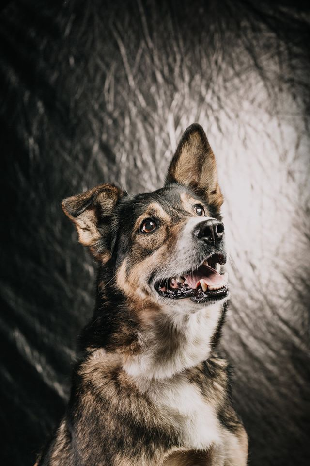
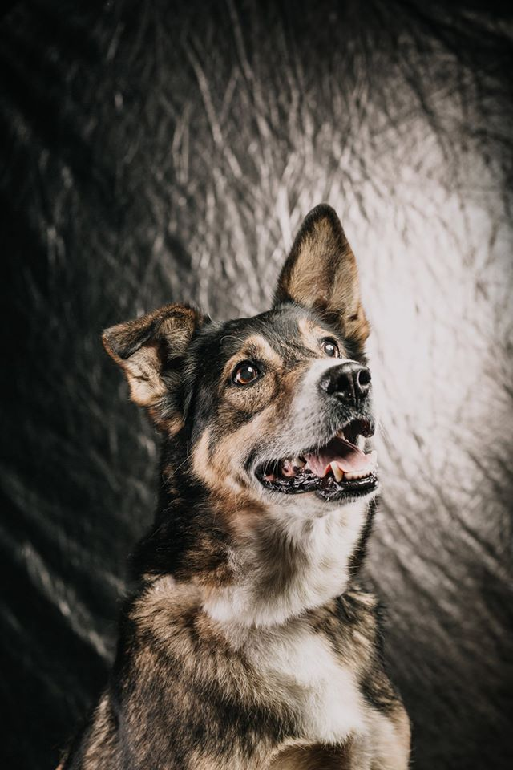

Dragi/a prijatelju/prijateljice pasa!
Azil, posljednje utočište za brojne nam zaboravljene i napuštene četveronožne sugrađane/ke smješteno je u prigradskom naselju Nemetin, nešto više od 5km udaljenom od Osijeka. Vrijedne ruke volontera/ki i uposlenika/ca Azila nastoje uljepšati svakodnevicu našim štićenicima i štićenicama čiji se broj rijetko spušta ispod 200.. Da gladnih usta ne bi bilo još i više program kastracije provodimo cijele godine. Antiša, Melita, Gazda, Goca, Divljo, Ankica, Mustra, baš kao i svi ostali stanovnici/ce Azila sanjaju o danu kada će upoznati čovjeka koji je potegao do Azila baš zbog njih i s kojim će zaboraviti sve one ružne uspomene i sjećanja. Na stotine ih je već ispunilo taj san. Upitnik koji ispunjavaju potencijalni udomitelji pomaže nam pri pronalasku idealnog psa baš za njih. Da im ne moraju naši psi pričati o važnosti kastracije, svojim potrebama i pravima za buduće udomitelje osmislili smo brošuru s korisnim informacijama. Kada je svima sve jasno udomitelji potpisuju ugovor o udomljenju, a da smo stvarno spojili srodne duše (a i da nas naši psi nisu zaboravili) uvjerimo se obilaskom naših bivših štićenika/ca u njihovim novim domovima.
I dok se oni nas još tu i tamo prisjete, nas i dalje muče svakodnevni azilski problemi. Suživot s dvije stotine pasa nije nimalo lak- treba počistiti tih tri tisuće kvadrata (nekad se čini i kao četiri), oprati svakome zdjelicu, promijeniti vodu i skuhati ručak za dvjesto gladnih usta. I nije to sve. Uvijek ima onih bolesnih kojima je potrebna dodatna njega, nađe se nerijetko i neka ograda za pokrpati, rupa za zatrpati, a i nema tog koji će proći dvorištem a da ne zastane i razmijeni koju s domaćinom, barem o vremenu, pa tako dvjesto puta. Al nije ni to sve. Imamo mi velike planove. Od kada smo preuzeli sklonište (koje je u to vrijeme izgledalo kao prizor horror filma) u fazi smo rekonstrukcije. Činimo sve kako bi životni prostor naših štićenika/ca bio što bolji , pa makar i privremeni, dom. Grade se novi boksovi, adaptira se postojeća infrastruktura, kanalizacija je stigla, plin je u planu, a još brdo posla nas očekuje. Nekada se i sami sebi čudimo kako nam to uspijeva sa sredstvima koje Grad Osijek izdvaja za Azil- precizno 8.333kn mjesečno. Ostalo je dobra volja sugrađana/ki i sposobnost predanih aktivista/ica da iz ničega naprave nešto. Nadamo se i boljim danima, i ne samo da se nadamo nego na tome i radimo. I nema ljepšega nego biti dijelom te priče i doći kući umoran/na iz Azila znajući da si nekome uljepšao/la dan.
Dođi i uvjeri se sam/a.
Super izazov 22
Dobro došli u Super izazov 22!
POWERED BY SUPER LJILJA
Prijavi se & pridruži više od 420.000 ljudi koji su već prošli ovo 22-dnevno vegansko iskustvo!
- Online vodstvo mentora/ica & nutricionista/ica!
- Prijateljsko & podržavajuće okruženje!
- Hrpa basnoslovnih biljnih recepata!
- Besplatno!
Kako se prijaviti?
Klikni na: https://superizazov22.com/
zatim:
- prijaviš se putem kratkog obrasca
- pridružiš se posebnoj Facebook grupi Super izazov 22 (kliknite na "Pridruži se grupi"),
i to je sve!
Udomljenja u doba korone ;)
Nedajbože da nam stanu udomljenja, pa ubit ćemo tu Koronu!!
Reče Lemon i dadne mi ne jednu nego sto i jednu pusu!
A ja vam sad moram prevest sve te silne puse; iliti - KEROVCI IZ AZILA VAM PORUČUJU da oni (i ovog puta!) nisu ni za šta krivi i da mole ako razmišljate o psu da prvo razmislite o psu iz Azila jer udomljavanjem psa iz Azila spašavate čak dva života! Onog kerovca kojeg ćete odvest kuć iz Azila i onog s ulice koji će doći na njegovo mjesto!
Mi smo skrooz pojednostavili protokol udomljavanja u smislu da to što ćete prvo se čut s nama pa tek onda doći u Azil uopće nije tako loša stvar, pa mi smo baš ugodne sugovornice preko telefona
Kako to sad izgleda?
Udomljavanje u doba korone?
Evo vako: vi prvo pogledate sve pse i pročitate o njima sve što smo napisali (jer psa trebate birati po karakteru a ne po izgledu baš kao što su ljudi koji vas vole jednako birali srcem) to možete učiniti tu na fb, evo linka na album - https://tinyurl.com/w2wb7su i onda nam se javite s nekim užim izborom a možete nam se javiti i odmah pa ćemo vam mi pomoći napravit taj uži izbor. E onda kad iskomuniciramo to sve u inboxu il telefonski (stvarno vam stojimo na raspolaganju jer uostalom - udomljenja su razlog zašt postojimo!) onda dogovorimo točan termin vašeg dolaska u Azil kako biste mogli i uživo upoznati vašeg izabranika il izabranicu il množina. Nebojte se, to sve radimo uz minimalan socijalni kontakt odnosno mi vam izvedemo psa (po psa) i vi s njima (samo vi) odete prošetati dolje šetnicom ispod Azila, uzmete si vremena koliko god vam treba i zaljubite se!
Ugovor također ispunjavamo uz minimalan kontakt, ne sekirajte se, na sve smo mislile, jer ne želimo ni vas a ni nas (pa tako posredno i kerovce) dovesti u opasnost, s nama ste sigurni, baš točno onoliko koliko očekujemo od vas, kad udomite psa od nas, da on/a bude sigurna s vama!
Besplatne kastracije pasa
Kad bi se kerovce pitalo, pa ne bi nitko od njih volio živjeti u Azilu! Kao da je ludilo dane, mjesece, godine provoditi zatvoren/a u kavezu, boxu (trebate vidjet šinteraje...mislim možete ih vidjet, prepun je fb snimaka i fotografija di jedu jedni druge, u govnima, prljavštini, gladni i umorni. Kao "spašeni" jel...) Mi samo gasimo požare i ovako možemo unedogled i jest, naravno da se svaki spašen život broji, to je velika najveća stvar! Al da imate priliku spriječiti spašavanja, prevenirati ih, preduhitrit ih, biste li pokušali? Pa ja mislim da bi, i evo dajemo vam priliku za to! Najbolja prevencija patnji prekobrojne pseće populacije jest kastracija! Da, ma čula sam već sve žive protuargumente i niti jedan mi nije dao neku alternativu osim ove koju već živim, živimo, žive. A ta je previše pasa, premalo dobrih uvjeta za udomljavanje, i da - reći ćete da ćete štencima svoga psa naći dobre domove, čula i to već jedno milion puta al ako malo bolje razmislite - nije to rješenje jer ti štenci će opet imat štence pa štenci štenaca svoje štence i tako u samo godinu dana dođeš od jednog psa do 500tinjak pasa u samo godinu dana! Nije, stvarno nije dobra matematika. I onda umiru u mukama, sadisti se iživljavaju, fb je prepun slika pasa koji traže dom i mnogi od njih ga nikad neće naći a dotle će živjeti po kojekakvim rupama... Jedino rješenje koje trenutno imamo su kastracije. I mi vam ih nudimo besplatno! U suradnji sa njemačkim partnerima, udrugom ITV Grenzenlos koja u potpunosti financira novih 300 kastracija za skrbničke pse s područja Osijeka, i Veterinarskom stanicom Osijek koja ih obavlja nastavljamo projekt započet jesenas. Sve što trebate učiniti jest ispuniti prijavnicu i čekati da vam se jave naše cure. Aj pliz da se ne igramo ni savršenog svijeta, ni dosadnih mačo dosjetki nit pametnjakovića, nitko na svijetu se još nije dosjetio efikasnijeg rješenja pa nekako ne gajim nadu ni da će se baš pod ovim postom desit išta slično, ajd da mislimo i na druge, nismo sami na planeti premda se prečesto ponašamo kao da jesmo.
PRIJAVNICA: https://forms.gle/6cKdo19aKvGUgpSTA
Kako doći do najtraženijeg kalendara u svemiru!?
Dakle, ako ste propustili promociju (mislim, šteta jel) onda nemojte propustiti svoj primjerak kalendara ni za živu glavu! Pa kerovci svašt planiraju po Azilu od tih para :)
Znači na slijedećim lokacijama možete pronaći Tamnu stranu mjeseca, naaajljepši kalendar u svemiru
- ŠTAND u Kapucinskoj ul., na našem starom mjestu svim danima osim nedjeljama skroz do Badnjaka u dvije smjene - prijepodnevnoj od 10 do 12 i popodnevnoj od 17 do 19 sati. Uz kalendare na štandu možete pronaći kompletnu azilsku butigu; dukse, majice, kape, ruskake, bedževe, privjeske i naše nasmiješene volonter(k)e i ponekog kerovca.
- PORTANOVA infopult
- Dječje Kazalište B.Mihaljevića, dgo (8-15)
- vet. ambulanta Valvet
- vet. stanica Osijek
- vet. ambulanta Fury
- Ured naše udruge, Senjska 18, Jug2
- Zagreb: ured Prijatelja životinja, Jurišićeva 25 (pon-pet 9-17)
- naružbe primamo iz čitavog svemira u naš inbox na fb Azil Osijek-volonteri ili na pobjede@gmail.com
- i naravno u našemu Azilu (i još i prošećete nekog, kad već dolazite...)
 

Udomljavanje je ljubav
Ne znam znate li šta sve Azil daje u miraz kerovcima kojima vi odlučite dati svoje srce i udomiti ih?
E ovako; uz pomoć Grada Osijeka (trebale su nam godine, al smo uspjeli!) svaki pas bude cijepljen protiv bjesnoće (što je zakonska obaveza), čipiran (što je također zakonska obaveza ali i garancija da ćete lakše pronaći svog psa izgubi li se ikad!) i kastriran.
UZ pomoć donacija svih dobrih ljudi koji prate i podržavaju naš rad svaki pas bude i očišćen od unutarnjih parazita (činimo to odmah po ulasku u Azil i onda svaka 3 mjeseca ponovo) bude očišćen od buha i krpelja, odmah po dolasku i onda 1x mjesečno dok živi u Azilu, znači s našim psima buhe ne putuju
Svaki pas čim dođe bude cijepljen protiv psećih virusnih bolesti, ukoliko se pas ne udomi u idućih godinu dana, bude cijepljen opet, odnosno u svakom trenu udomljavajući psa iz Azila dobivate zdravog psa osim ukoliko vas ne informiramo drukčije!
Ono što je novost i što uvodimo jest da sa odabranikom il odabranicom srca svog dobijete i njegov/njen zdravstveni karton! Pa ćete znat ukoliko jest ikad liječen od bilo čega, pa bila to i prehlada
Ako udomite psa iz Azila, dobijete besplatno savjetovanje s trenericom pasa i onda 15% popusta odlučite li se na školicu. Najbitnija stvar jest da udomljavajući psa iz Azila dobijete stručnu pomoć u smislu da naše cure jako dobro znaju koga vam udomljavaju i mogu bez problema spojit vaša očekivanja sa potrebama naših pasa
Isto tako, možda malo manje važno al slatko jest to da udomljavajući psa iz Azila postajete dio naše velike azilske familije
E i nema tih para koje to mogu kupit
#UdomljavanjeJeLjubav
Udomljenja u 2018.
LJUDI!
Hoćete znati koliko pasa je u 2018. udomljeno iz našega Azila?
Hoćete?
TRISTO PEDESET I PET PASA U 2018. JE UDOMLJENO IZ AZILA!!!
Živjelo svih 355 udomitelja/ica!
Živjeli svi vi koji ste ušli u najveću i najbolju familiju na svijetu!
Živjeli svi vi koji ste obećali brinuti o njima i u zdravlju i u bolesti, do kraja njihovih života!
Živjela udomljenja, živjele Pobjede!
Vidimo se u provjerama
Grad Osijek zaslužan je što su vam svi došli cijepljeni, čipirani i kastrirani, dobri ljudi koji rade u Azilu, volonterke i volonteri zaslužni su što vam se pazilo na vašeg psa kao na oči u glavi (svo ono vrijeme dok nije postao vaš, jel :) ), sve donatorice i donatori zaslužni su što su siti, svaki mjesec čišćeni od buha i krpelja, svaka 3 mj. od unutarnjih parazita, svake godine cijepljeni protiv virusnih, što su liječeni ako su došli bolesni.
Zaslužni ste i svi vi koji ste dijelili njihove objave, i svima i svuda pričali o Azilu pa se stvarno dogodi da uspijemo (i to 99% lokalno ljudi moji!) udomiti 355 pasa! Živjele i privremene udomiteljice i pokoji čiko dobra srca
Živjeli svi vi koji činite Pobjede najboljom udrugom na svijetu!
Žiiiivjeeeeelliiiiiiiiiiiiiiiiii!
Znate li kakva je bila 2018.?
Volontiranje je navika srca, et ne znam šta bolje od tog da vam kažem
Jer zapravo tako je, kad jednom kreneš i kad jednom upoznaš te pse, kad jednom osjetiš benefite njihovog društva, taj filing da sudjeluješ u nečemu što je veće od tebe i što je budućnost sama...
neprocjenjivo, zato i nije plaćeno
Azil i Pobjede izgrađene su na volonterskim temeljima, na (možda zvuči malkoc patetično al je tako) žuljevima, znoju, suzama svakako pa čak i ponešto krvi (pa bar da te pmsove silne uračunamo) i Azil smo s najvećim brojem volonterki i volontera u Hrvatskoj e al još uvijek nedovoljno nas ima, i bez obzira što niste lili krv, suze, nabili žuljeve u proteklih 10 godina pa još uvijek nije kasno za sve to
Ma šalim se ja, one najgore i najteže stvari daleko su iza nas i naravno da djelujete ovisno o svojim vlastitim mogućnostima i željama, ne morate se bojati da ćete morati kopati ili cjepati drva ak to ne želite, a možda baš želite jer po cijele dane sjedite u uredu i baš vam treba zdravog old skul razgibavanja. Možda volite bojati i samo da znate da i mi volimo kad volite bojati jer i kerovci vole kad volite bojati jer oni vide boje i volimo da nam je Azil lijep i npr. zelen i sav od cvijeća i drveća a vi možda baš latentna baštovanka u duši! Drava i šuma ispod Azila i društvo kerovaca u šetnji najbolji su lijek protiv depresije za koji znam! Pravljenje budućnosti onima kojima ju je netko već pokušao oduzeti najbolji je lijek na svijetu za sve!
A sve što vam treba za to jesu neke stare patike i pokoji osmijeh, za ono što ćete odnijet kuć od nas - vrlo mal ulog
U 2018. volonterke i volonteri šetali su pse, davali im imena i učili ih na dobrotu u ljudima. Vozili su pse k veterinarima, njegovali ih u svojim domovima i davali im nadu. Educirali svoje sugrađane kroz razne programe, pravili evente, popravljali svijet. Zimi brinuli da kerovci imaju slame u kućicama, i nacijepanih drva za u peć, ljeti da uživaju u Dravi i da dok se može u kratkim laćama radit - popravaljali, bojali, preuređivali, kopali, sadili, smijali se, družili i zaljubljivali.
Da, sve to i puno puno više toga možete kod nas. Kod nas možete voditi aukcije il četkati kerovce, možete smisliti kako Azil učiniti još ljepšim il ispust još interaktivnijim. Možete crtati i možete kopati. Možete šutjeti i maziti kerovce a možete i skuvati kavu jer ćete je uvijek imat s kim popit
Naši kerovci vam jednostavno daju priliku da postanete bolji vi. I nemojte je propustiti, vjerujte mi da vrijedi svega uloženog!

Božićni ručak u azilu 2018
Kojem danu se kerovci naaajviše vesele u Azilu?
Pa 26.12. jer onda je Božićni ručak u Azilu!
i znaju to već i ptičice na granama, oni kerovci kojima će ovo biti prvi Božić u Azilu slušaju od starijih i iskusnijih priče (za koje ne mogu sto posto garantirat da nisu sve bar malo napuhane ;) ) o petstotinjak djedova i baba Božićnjaka koji s punim rukama fine klope donesu Božić i do Azila i onda nakon što se cijeli Azil prošeta svi ručaju onako fino kako nikad do tad nisu
Šta kažete?
Da ponovimo sve to i ove godine pa da kerovci opet imaju o čemu pričat?
26.12. dođite da damo, svi zajedno, Božiću onu dimenziju koju zaslužuje! Dimenziju solidarnosti, suosjećajnosti, ljubavi i prijateljstva. Jer znaju naši kerovci da imaju puno puno prijatelja, samo sada nestrpljivo čekaju da ti isti stave kape, šal i rukavice, koju konzervu u džepove i dođu dovest Božić i do Azila.
Startamo u 10 ujutro (taman nam date do 10 fore da sve očistimo, promijenimo vodu, operemo zdjelice, stavimo im ogrlice :) ) i onda krećemo sa šetnjama.
Kerovce ćemo zajedno nahraniti u 13 sati, a odmah nakon što se oni napapaju, bit će ručka i za sve na dvije noge :) Skuvati ćemo vam najfiniju vege sarmu na svijetu!
I nakon tog opet u šetnjice skrooz do mraka :)
Nemojte se bojati ni da ćete ostati žedne i žedni jer bit će kuvanog vina i čaja čitav dan! :)
e i na kraju imamo malu malu molbicu: s godinama naši povodci kojima vodate kerovce do Drave ispod Azila malkoc su se ofucali, uništili, nestali i iskreno nećemo ih ni imati dovoljno da se svi izvedu i zato vas molimo (al nemojte im reći, nek bude iznenađenje ;) ) ak možete da kerovce za Božić osim sa konzervicom iznenadite i povodcem
I to nije sve, kerovci su pisali Djeda Mrazu koji je onda pisao PET HOME Hrvatska koji je u Portanovi otvorio shop i odlučili su i oni uključiti se u darivanje i svakome tko dođe kupiti povodac za Azil daju 30% popusta na njega, šta kažete a? :)
A mi vas molimo ako budete pod azilski bor (iliti ono drvo koje bude glumilo bor ove godine :) ) odlučili donijet koji povodac da vodite računa o tome da budu 1,5 do 2m dugački, manji od toga ili fleksiji nam ne vrijede puno u Azilu, al znate to i sami iz iskustva
Eto, sad kad smo se sve dogovorili mi smo sigurni da će 26.12. i ove godine spektakularno zatvoriti 2018. i da ćete i vi i mi i kerovci još dugo dugo prepričavati kako je lijepo bilo...
Promocija najljepšeg kalendara na svijetu
pa ljudi moji! ja ne mogu a da vam ne pokažem bar još jednu STRANICU NOVOG NAM KALENDARA!
a to je zato što sam baš baš baš ponosna na njega, kad vidim šta se sve može gurnuti među 12 strana, toliko ljubavi, kreativnosti, želja, kad ekipa koja ga je radila nije pala s marsa nego iz našeg Azila Kad su to ljudi koji vole taj Azil onda ta ljubav može izgledati i ovolko dobro!
Da, daaaa dobro ste skužili - napravili smo kalendar/novine u kojima ćete moći čitati o toliko toga što muči nas kerovce, o onome od čega brže i hrabrije rastemo, o onome što nas veseli i o onome što mislimo kad kažemo da želimo bolji svijet! Ma kad vam kažem da će vam se dopasti! A bome ima da vam se dopadne i Promocija najljepšeg kalendara na svijetu! jer radimo ko sumanuti da bude jakojako lijepa, da vas gane do suza, da izađete s nje sretni, nasmijani i ponosni do neba i nazad što smo prijatelji! E baš takvu promociju dogovorili smo se mi kerovci da ćemo napraviti, a naše volonterke i volonteri će nam pomoći s kolačima (nije da mi ne znamo mijesit al ne bismo voljeli odgovarat za svaku dlaku koju nađete u kolačima ), skuvat će vino, čaj, zajedno smo snimili neke super filmiće, organizirali da i nebo tu noć bude na gotovo i da kiša, snijeg i ostali bakraći nemaju pristupa
i znate šta?
Ma bit će vam super, jer mi vas volimo kolko i vi volite nas (a i računamo da nam vratite za Božićni ručak)
naše drago kino Europa, 12.12. srijeda u 19:30 Promocija najljepšeg kalendara na svijetu!
a nakon promocije kalendar kreće na putešestvije po svijetu, šaljemo ga di god poželite a već sada ga možete naručiti u našem inboxu! Pa onda naši štandovi kod pbza u Kapucinskoj, pa Gisko, pa Portanova, pa sve znate
Ko i svih dosadašnjih godina kalendar ćete moći dobiti u zamjenu za donaciju od 40kn
i znate šta?
ovo nam je DESETI kalendar po redu!